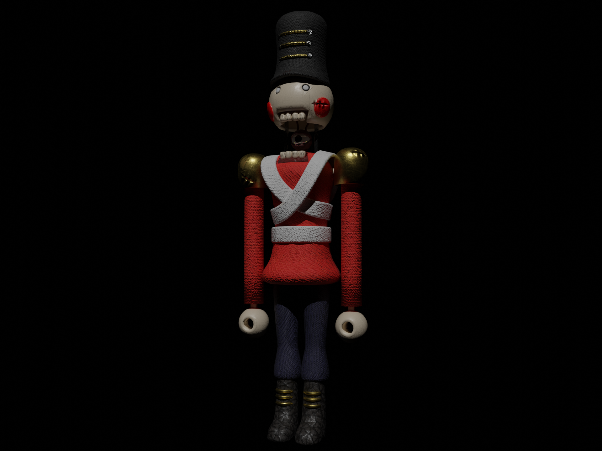

Gross Flesh Worm

This is one of the first 90's styled renders i made. I kind of just used sculpt mode and made this abomination.
Pyro

This one is interesting because it involved fire simulation that you can see behind Pyro. it took quite a while to get right so i'm proud of how it turned out. I main Pyro by the way.
Offense

Not much to say about this one. It's a cool render i made of a game that I like. (Employee models made by Bini3D on Youtube)
Standman

Remake of my first ever render.
Scavenging

Test of fog and filters. I think i went a little overboard on the filters. (Employee models made by Bini3D on Youtube)
Orpheon Exploration

This is a very old one, but still a good one. Not much to say about it other than that.
Tripod

A 3D depiction of the Martian Tripods from War Of The Worlds.
Sunset Blizzard

A render i made for JaySalty's Puffmin Quest hack. I rendered it at 6000x3000 but had to downscale it.
Target Acquired

One of my first renders. I think it still holds up.
Limos Mechanica
This one was inspired by those old 90's point-and-click primitive CG games. Also a bit of The Desolate Hope
Reflection
">Crimson Moons
Limos Mechanica
[TEST]
Play Music